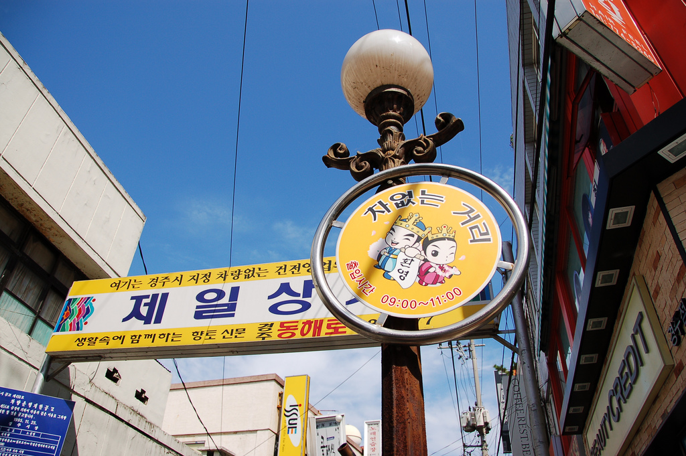

Toponomy, placename etymologies
From Wikipedia, the free encyclopedia - Last Updated: Aug 13, 2022 - Source of information
by riNux - Flickr, CC BY-SA 2.0, Link
Korean place name etymologies are based upon a large linguistic background of Chinese, Japanese and Old Korean influence and history. The commonplace names have multiple meanings in Korean, Chinese, and when transliterated to English as well. The etymological meanings of these words stem from history, mythology and the landscape of the area. The place names appear with commonality within the Korean Peninsula and therefore attain a level of interest as to why they appear so frequently. Place names are not the country or province but the local area, and usually contain reference to the land it is named for; whether by historical fact or the landscape it is set in. Name elements such as cheon, san, seong, and ju appear often as markers of location or history. Over time, these markers can lose their original meaning, yet they remain as indicators of a historical etymology. Korean place names can contain characters that are Chinese and thus can be transliterated into Chinese with reference to Chinese words. Korean can also follow the similar grammatical structure as Japanese, however whether there is a relationship between the two languages is still unknown as of yet.
History
Korean history is connected to the Korean language, as from early Korean myths and legends they receive many of their common place names. The old Korean language is divided by three distinct types of the language - the Koguryó, Paekche, and Silla kingdoms. It is from the Silla defeat of the other two kingdoms that Korea came to have to its modern-day geographical boundaries, including from the Koryo Dynasty from which the western name for Korea is derived. The Korean language is considered to be structurally closest to Japanese, yet debate amongst linguists still continues as to how the languages are connected. In writing Korea took much from the Chinese with their characters being called Hanja (한자) (in Chinese it is called Hanzi (漢字)) based on the Chinese characters borrowed and added to the Korean language. Some Chinese words can also influence the etymology of Korean place names. A main feature of Korean is Hangul, which is a syllabic writing system. The "clustering of letters" into syllables had been created as a way of bringing writing to the common people, and to contrast the Chinese characters that were used by the literary elite.
Etylology
The etymology of Korean words, especially common place names, can have origins in the Chinese language as Korean has taken many of their characters into their own language. Many of Korean place names have roots in Chinese characters, which is evident in their similarities when translated. The etymology of a word is tied to its historical growth, which allows for changes. Many of common Korean place names contain words such as seong (성) (“city” [as in “fortress”]) which reference that certain townships must have been built inside fortresses, or fortifications, and therefore historically have changed since then. History influences many of the common names seen today, such as the city of Gyeongju (경주), which has ties to the Silla kingdom. It was the capital of the kingdom, where it was known as Seorabeol (“capital”), and also Geumseong (“city of gold”). The city was renamed to Gyeongju in 940 by King Taejo, due to its prosperity and fame. It can be translated as “congratulatory city” or “capital city”. Busan also has a historic background to its etymology, as it is Sino-Korean for “cauldron mountain” (부산). The first written recording of Busan was in 1402 as “Dongnae-Busanpo”, and was recorded as “Busanpo” for the latter half of the 15th century. It is believed to be named for Mt. Hwangryeong (황령산), and reflects the geographical changes of the city during the end of the 15th century.
Back to top of page